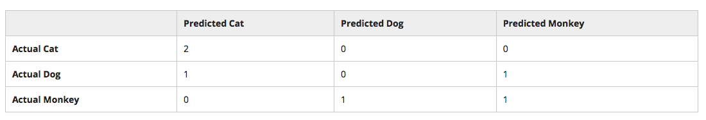

Data Evaluation
Posted on Jul 16, 2018 in Notes • 15 min read
Choosing ML Algorithms¶
- The dimensionality of your data
- The geometric nature of your data
- The types of features used to represent your data
- The number of training samples you have at your disposal
- The required training and prediction speeds needed for your purposes
- The predictive accuracy level desired
- How configurable you need your model to be
Scikit learn¶

Microsoft Azure¶
Microsoft Azure ML Algorithm Cheat Sheet Article
Evaluating Algorithm Performance¶
Confusion Matrix¶
A confusion matrix displays your model's predicted (testing set) outputs against the true observational values.
Traditionally, the predicted targets are aligned on the X-axis of the matrix, and the true values are aligned on the Y-axis.
import sklearn.metrics as metrics
y_true = [1, 1, 2, 2, 3, 3] # Actual, observed testing dataset values
y_pred = [1, 1, 1, 3, 2, 3] # Values predicted
metrics.confusion_matrix(y_true, y_pred)

Diagonals from the top left to the bottom right: correctly classified labels
Sum up the values in a row: true count of data
Sum up the values in a column: predicted count of model
# Visulisation of the confusion matrix
import matplotlib.pyplot as plt
columns = ['Cat', 'Dog', 'Monkey']
confusion = metrics.confusion_matrix(y_true, y_pred)
plt.imshow(confusion, cmap=plt.cm.Blues, interpolation='nearest')
plt.xticks([0,1,2], columns, rotation='vertical')
plt.yticks([0,1,2], columns)
plt.colorbar()
plt.show()
![]()
Scoring Metric¶
- Condition Positive (P): Actual positive samples
- Condition Negative (N): Actual negative samples
- True Positive (TP/hit): Positives correctly predicted
- True Negative (TN): Negatives correctly predicted
- False Postive (FP/false alarm): Negatives predicted as positives
- Fales Negative (FN/miss): Positives predicted as negatives
- True Positive Rate/Sensitivity/Model Recall/Hit Rate: TP/P
- True Negative Rate/Specificity: TN/N
- Recall Score: TP/(TP+FN)
- Precision: TP/(TP+FP)
- F1 Score: 2 * (Precision * Recall) / (Precision + Recall)
- Positive Predictive Value/Precision: TP/(TN+FP)
- Negative Predictive Value: TN/(TN+FP)
# Same as `model.score()`
metrics.accuracy_score(y_true, y_pred)
# Recall Score
metrics.recall_score(y_true, y_pred, average='weighted')
# Precision Score
metrics.precision_score(y_true, y_pred, average='weighted')
# F1 Score
metrics.f1_score(y_true, y_pred, average='weighted')
# Full Report on a per label basis
target_names = ['Cat', 'Dog', 'Monkey']
print(metrics.classification_report(y_true, y_pred, target_names=target_names)) # Must be printed for formmated result
Cross Validation¶
Cross validation allows you to use the same training data to both fit and score your model without the need for an additional validation set.
It allows you to use all the data you provide as both training and testing.
It simplifies the overall process.
Problems with train_test_split()¶
- Without a deterministic selection of training data and testing data, you might train using the best subset of data but test on outliers, or some permutation in-between.
- By withholding data from training, you essentially lose some of your training data.
- Some information of testing set leaked into your training set during iterations over the configurable parameters.
cross_val_score()¶
- input: model, training set, 'K' (K-fold cross validations)
- training set cut into 'K' sets
- model duplicated into 'K' versions
- each version of the model trained with 'K-1' sets of training data
- each version of the model evaluated with the out-of-bag set
cv parameter¶
- (None) uses the default 3-fold cross validation
- (int) number of folds in a (Stratified)K-Fold
- (str) an object to be used as a cross-validation generator
- Leave-One-Out: ideally each having all samples except one.
- K-Fold: ideally of equal size.
- Stratified K-Fold: ideally each group having the same proportion of target classes.
- Label K-Fold: ideally the same target never appearing in both testing and training groups simultaneously.
if the estimator is a classifier and y is either binary or multiclass, StratifiedKFold is used. In all other cases, KFold is used.
DOCUMENTATION
# 10-Fold Cross Validation on your training data
from sklearn.model_selection import cross_val_score
cross_val_score(model, X_train, y_train, cv=10) # returns an array of cval scores for each version of the model
cross_val_score(model, X_train, y_train, cv=10).mean() # return the mean score of all versions of the model
Process¶
- Split your data into training, validation, and testing sets.
- Setup a model, and fit it with your training set
- Access the accuracy of its output using your validation set
- Fine tune this accuracy by adjusting the hyper-parameters of your model
- when you're comfortable with its accuracy, finally evaluate your model with the testing set
OR¶
- Split your data into training and testing sets.
- Setup a model with cross validation and fit / score it with your training set
- Fine tune this accuracy by adjusting the hyper-parameters of your model
- When you're comfortable with its accuracy, finally evaluate your model with the testing set
from sklearn import svm, grid_search, datasets
iris = datasets.load_iris()
parameters = {'kernel':('linear', 'rbf'), 'C':[1, 5, 10]}
model = svm.SVC()
classifier = grid_search.GridSearchCV(model, parameters)
classifier.fit(iris.data, iris.target)
RandomizedSearchCV¶
Randomized parameter optimization.
Pass in your parameters as a single dictionary that holds either possible, discrete parameter values or distribution over them.
SciPy's Statistics module have many such functions you can use to create continuous, discrete, and multivariate type distributions, such as expon, gamma, uniform, randint and many more
# Create dictionary of distributions of parameters
from scipy import stats
parameter_dist = {
'C': stats.expon(scale=100),
'kernel': ['linear'],
'gamma': stats.expon(scale=.1),
}
classifier = grid_search.RandomizedSearchCV(model, parameter_dist)
classifier.fit(iris.data, iris.target)
Pipelining¶
A Scikit-learn class that wraps around your entire data analysis pipeline from start to finish, and allows you to interact with the pipeline as if it were a single white-box, configurable estimator. Cnce your pipeline has been built, since the pipeline inherits from the estimator base class, you can use it pretty much anywhere you'd use regular estimators—including in your cross validator method. Doing so, you can simultaneously fine tune the parameters of each of the estimators and predictors that comprise your data-analysis pipeline.
Usage
- Every intermediary model within the pipeline must be a transformer, i.e. its class must implement both the
.fit()and the.transform()methods. - The very last step in your analysis pipeline only needs to implement the
.fit()method, since it will not be feeding data into another step. - Two underscores after estimator names and before parameters
- The pipeline class only has a single attribute called
.named_steps, which is a dictionary containing the estimator names you specified as keys.
# Pipeline example
from sklearn.pipeline import Pipeline
from sklearn.decomposition import RandomizedPCA
svc = svm.SVC(kernel='linear')
pca = RandomizedPCA()
pipeline = Pipeline([
('pca', pca),
('svc', svc)
])
pipeline.set_params(pca__n_components=5, svc__C=1, svc__gamma=0.0001)
pipeline.fit(X, y)
IMPORTANT:
Many of the predictors don't actually implement .transform()! Due to this, by default, you won't be able to use SVC, Linear Regression, or Decision Trees, etc. as intermediary steps within your pipeline. A very nifty hack you should be aware of to circumvent this is by writing your own transformer class, which simply wraps a predictor and masks it as a transformer:
from sklearn.base import TransformerMixin
class ModelTransformer(TransformerMixin):
def __init__(self, model):
self.model = model
def fit(self, *args, **kwargs):
self.model.fit(*args, **kwargs)
return self
def transform(self, X, **transform_params):
# This is the magic =)
return DataFrame(self.model.predict(X))